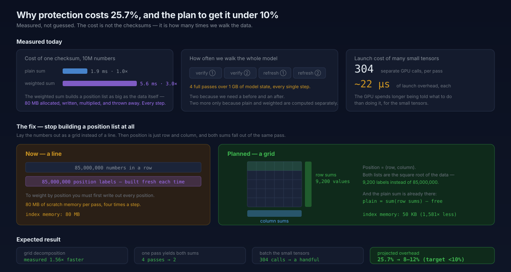

These are the exact files the README embeds. Animations run here and on GitHub.
Watch the SAA band sweep left→right, and particles falling into the state block.

9-second loop: particle strikes cell 13 → turns red → the division resolves → cell snaps green.

The green row highlight sweeps down the grid — that is one pass producing both checksums.
